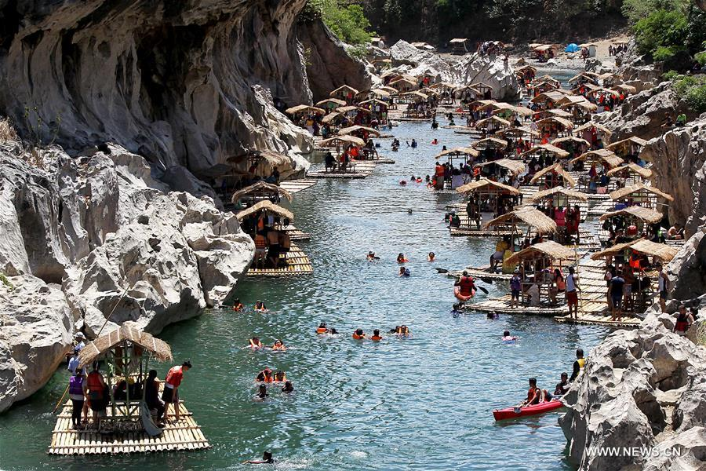

Minalungao National Park in General Tinio, Nueva Ecija is one of the most dramatic river gorge landscapes in Central Luzon — towering limestone cliffs rising from the crystal-clear Penaranda River, hidden caves, natural swimming holes, and a wilderness that feels worlds away from Manila.

Located in General Tinio, Nueva Ecija, Minalungao National Park is a protected area centered on a dramatic stretch of the Penaranda River where towering limestone cliffs rise directly from the water, creating a gorge of extraordinary natural beauty. The park is one of the most visually striking natural landscapes in Central Luzon — yet remains relatively unknown outside the region.
The limestone formations that define Minalungao were shaped over millions of years by the river cutting through the karst terrain. The cliffs rise up to 30 meters above the water in some sections, their faces covered in ferns, mosses, and small trees that cling to the rock. The river itself is remarkably clear — fed by mountain springs and protected within the national park — creating natural swimming pools of turquoise and emerald water between the cliff faces.
The park offers a range of activities — swimming, cliff jumping, kayaking, cave exploration, and riverside trekking. The combination of dramatic scenery, clear water, and relative seclusion makes Minalungao one of the most rewarding natural destinations in Nueva Ecija. It is best visited as part of a Nueva Ecija day tour combining the park with Pantabangan Dam and Gabaldon Falls.
Minalungao National Park is located in General Tinio, Nueva Ecija — about 130 km north of Manila. The nearest major city is Cabanatuan City, the commercial capital of Nueva Ecija.
Genesis Transport, Baliwag Transit, and other bus lines operate services from Cubao or Pasay to Cabanatuan City, Nueva Ecija. Travel time is about 2.5₱3 hours via NLEX and SCTEX.
Travel time: ~2.5₱3 hours | ~₱150–₱250 one-wayFrom Cabanatuan, take a jeepney or van to General Tinio municipality — about 30₱45 minutes. From General Tinio town center, hire a tricycle or habal-habal to the Minalungao National Park entrance.
Jeepney to Gen. Tinio: ~30₱45 min | Tricycle to park: ~₱50–₱80Register at the DENR park office and pay the entrance fee. Boat rentals are available at the park for exploring the river gorge — highly recommended for the full Minalungao experience. Local guides are also available.
Entrance fee: ~₱50–₱100 | — Boat rental: ~₱300–₱500Minalungao is best combined with Pantabangan Dam and Gabaldon Falls for a full Nueva Ecija day. All three sites are within reasonable driving distance of Cabanatuan City.
Combine with Pantabangan Dam & Gabaldon Falls | Full day recommendedClick any pin to explore Minalungao and nearby attractions in Nueva Ecija province.
A complete guide to the park and a suggested Nueva Ecija day tour.
Begin with a boat tour of the limestone gorge — the most dramatic way to experience Minalungao. The boat glides between the towering cliff faces, revealing hidden coves, cave entrances, and the extraordinary scale of the natural formation.
Find the best swimming pools in the river with your guide. The water is crystal clear and cool — a perfect contrast to the heat of the day. The combination of clear water and towering limestone cliffs creates an extraordinary swimming experience.
Try cliff jumping from the designated platforms along the cliff faces. Heights range from 3 to 10 meters — choose your comfort level and always check the water depth with your guide before jumping.
Explore the small caves accessible along the cliff faces with your guide. The caves offer a cool respite from the sun and some contain interesting formations and resident bat colonies.
Start your Nueva Ecija day at the limestone gorge. Boat tour, swimming, and cliff jumping. Allow 3₱4 hours for the full park experience.
Head to Pantabangan for the vast reservoir and dam scenery. Boat tours of the reservoir are available and the views of the surrounding mountains are spectacular.
End your day at Gabaldon Falls — a beautiful waterfall with natural swimming pools in the mountains of Gabaldon municipality. A perfect refreshing close to a Nueva Ecija adventure day.
"The boat tour through the Minalungao gorge was one of the most beautiful natural experiences I've had in Central Luzon. The limestone cliffs rising from the clear water, the hidden coves, the sound of the river — it's extraordinary. And almost nobody knows about it. Nueva Ecija is completely off the tourist trail and Minalungao is its best-kept secret."
"We spent the whole morning at Minalungao — swimming, cliff jumping, and exploring the caves. The water is incredibly clear and the cliffs are dramatic. It reminded me of the famous river gorges in Palawan but without the crowds and the price tag. A hidden gem that deserves far more attention."